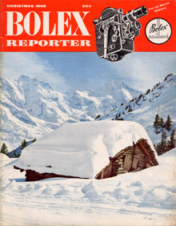
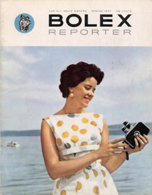
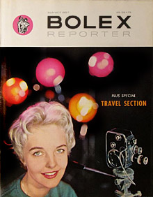
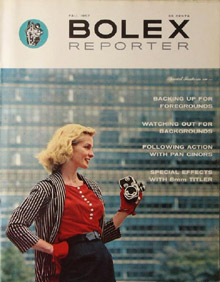

Bolex Reporter, Volume 7

- Christmas 1956
- Volume 7, Number 1
- Articles: "Let's Make Christmas Movies", Alan Costain; "Indoor Lighting Simplified", Ted Russell; "How To Project Your Movies", Ernst Wildi; "New Bolex 8mm Titler", Homer Cummings; "Which Film?", Rus Ericson; "New Bolex Underwater Case", Myron Matzkin; "Lenses and Lens Service", Charles Huettenmoser
- Articles on home movies and indoor lighting are featured in this Christmas issue. The underwater housing for H cameras is introduced, and Myron Matzkin offers tips on making underwater films
- 32 pages

- Spring 1957
- Volume 7, Number 2
- Articles: "New Bolex H-16 Reflex", Ted Russell; "Outdoor Lighting Simplified", Ted Russell; "Movies From Your Stills", Ira H. Latour; "Make Money With Your Bolex", Les Barry; "How To Diagnose Your Movie Faults", Ernst Wildi; "How To Use Filters", Norman Rothschild
- This cover features Marie-Claire Thorens, the daughter of Andre Thorens. Mr. Thorens, who also took the photograph, was the President of Paillard Products in New York, and Director of Paillard S.A. in Switzerland.
- 32 pages

- Summer 1957
- Volume 7, Number 3
- Articles: Unknown
- Unfortunately, I no longer have issues 3 and 4 of Volume 7. They're either lost or misplaced, so I can't refer to them for details. If you happen to have this issue, please email me if you'd like to provide details of the articles.
- 32 pages

- Fall 1957
- Volume 7, Number 4
- Articles: Unknown
- Like issue number 3, this issue has disappeared from my collection. If you have a copy and would like to help complete this list of Bolex Reporter information, please scan the cover and email the details to me. If you have an extra copy you're willing to sell, definitely email me!
- 32 pages